Click image to zoom · Click outside or press Esc to close
I build AI-powered automations — workflows, content pipelines, and agents — using n8n and large language models. No agency background. Just a habit of shipping working systems and figuring out the rest along the way.
I'm Junrio Batutay, and I build automations for a living I haven't started yet. Over the past 6 months, I've taught myself n8n, worked through real integration problems, and connected it to AI models to build systems that turn raw input — text, video, form data — into finished, usable output.
I don't have a job title in this field yet. What I have is a growing set of workflows that actually run, break, get debugged, and run again. I care about the same things a hired automation engineer cares about: reliability, clean error handling, and building something a non-technical person could actually use.
I'm looking for freelance work, an entry-level role, or a first client willing to take a chance on someone who learns fast and ships.
Takes a raw video/podcast transcript and turns it into three finished pieces — a blog post, a tweet thread, and a LinkedIn post — each generated by its own dedicated AI call so every output can be debugged and tuned independently, then compiled into a single Google Doc for review. Built-in error handling notifies via Telegram if any generation step fails, rather than producing a silently incomplete doc.
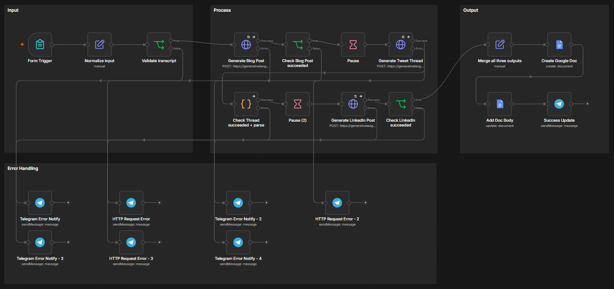
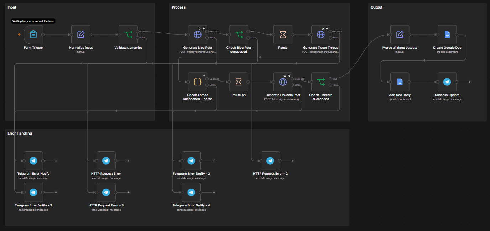
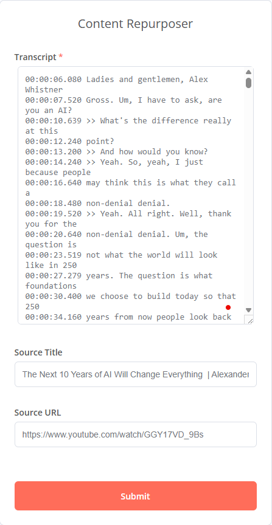
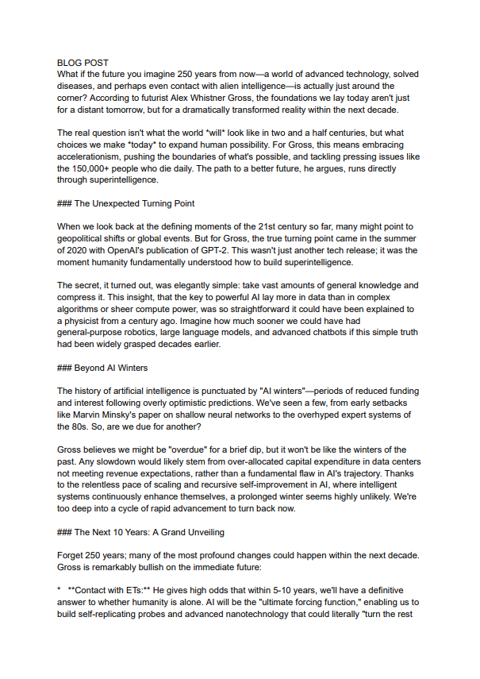
Why three separate AI calls, not one: generating the blog post, thread, and LinkedIn post as distinct calls means each has its own tailored prompt and can fail or be re-tuned independently — a single "do all three" call would be harder to debug when one format alone comes out wrong.
Tested against a real 30-minute YouTube transcript on AI/accelerationism, with all three outputs, retries, and the Telegram failure alerts verified end-to-end before calling it done.
Simulates how a small business could automatically qualify inbound leads. A webhook receives a form submission, AI scores it Hot / Warm / Cold against an explicit, documented rubric (not a black-box score), then drafts a personalized reply matched to that urgency — everything logs to Google Sheets, with an immediate email alert for Hot leads so nothing time-sensitive goes unnoticed.
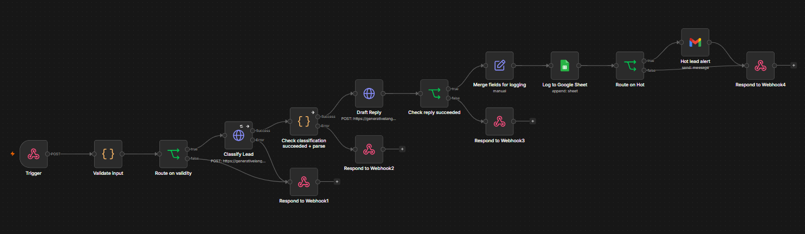
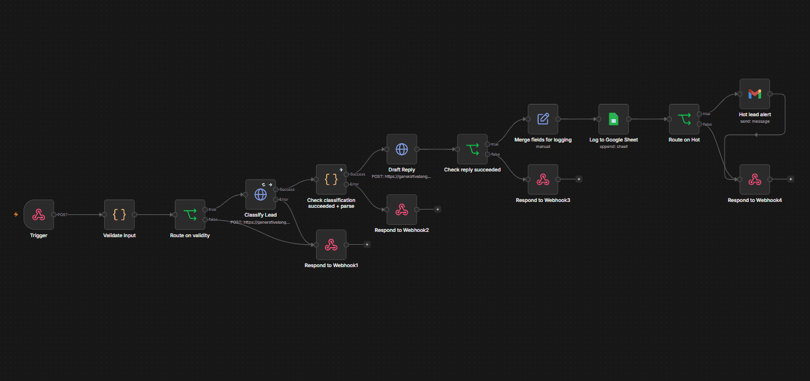
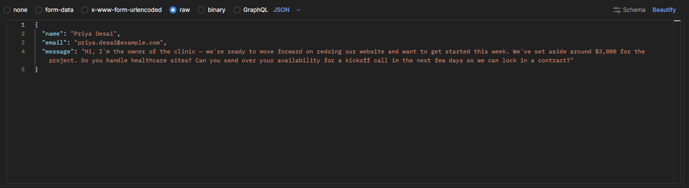
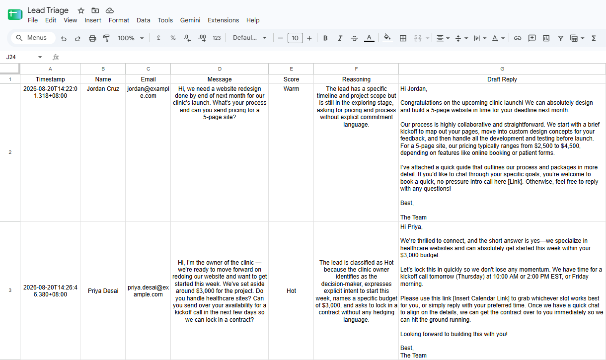
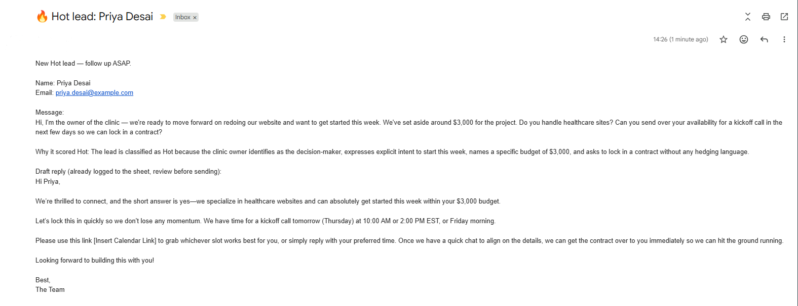
The rubric is explicit, not a black box: the prompt spells out exactly what makes a lead Hot, Warm, or Cold, and the AI returns a hedgingLanguagePresent flag alongside its score — added after real testing surfaced a misclassification (a soft timeline like "sometime before year-end, if it's the right fit" was over-scored as Hot). That flag makes future misclassifications debuggable instead of mysterious.
Malformed submissions (missing fields, bad email format) are caught before they ever reach the AI, so no API call is wasted validating garbage input.
Runs every morning, pulls the day's top trending AI-tools discussions from Hacker News, and uses AI to turn the top three into platform-specific social captions (Twitter + LinkedIn) with matching image-generation prompts — all queued into a Google Sheet as Drafts for human review. Nothing auto-posts.
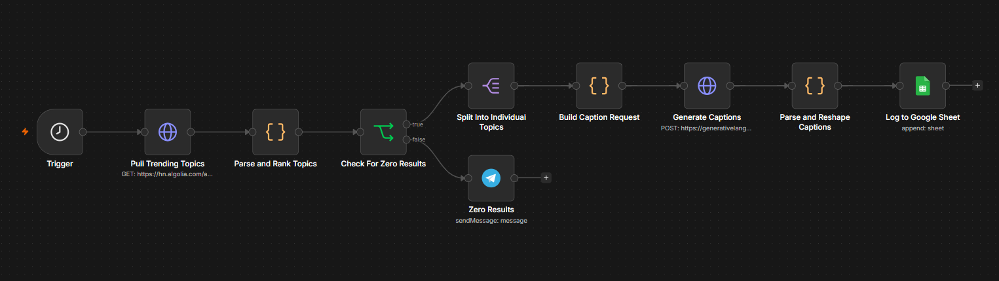
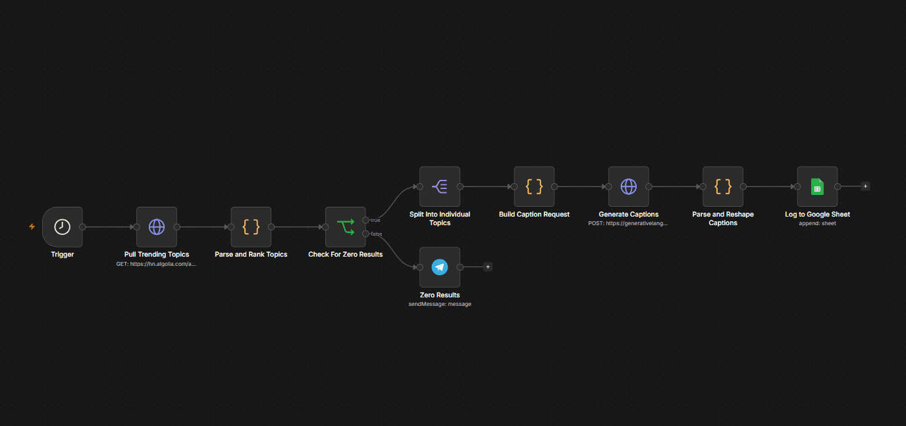
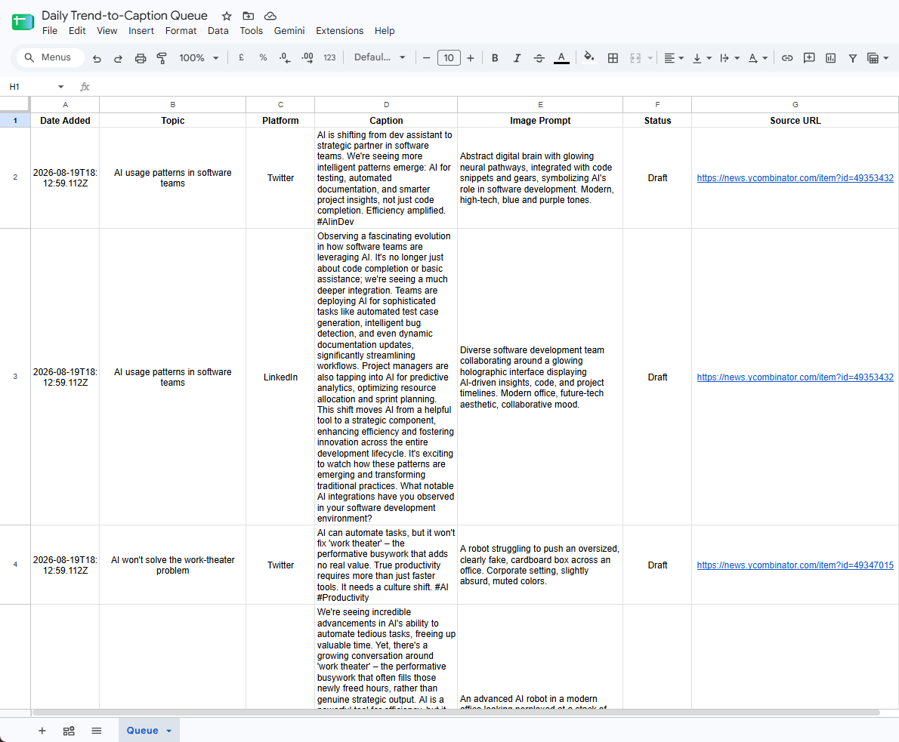
Decoupled by design: the trend-pulling step knows nothing about the AI captioning logic, and vice versa — everything downstream reads a normalized shape, not Hacker News's raw response format. That decoupling got tested for real when the original Reddit-based source turned out to hard-block n8n Cloud's IP range and had to be swapped for Hacker News's API with zero changes to the AI logic.
A word-boundary filter and a rolling 24-hour window keep results genuinely "trending today" rather than all-time high scorers — an early version without both filters surfaced a years-old post simply because its title contained "ai" as a substring.